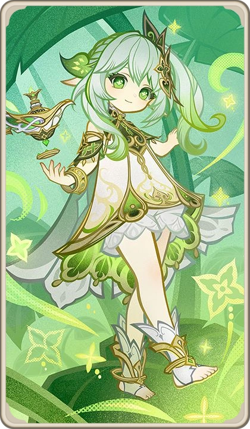

Nahida, also known as Lesser Lord Kusanali, is the current Dendro Archon, born 500 years ago after the Cataclysm. Unlike other Archons, she was not a successor chosen through power, but a being formed from the consciousness of Irminsul—the world tree that records all knowledge and memory.
Her existence is deeply tied to information itself. She is not just a god of wisdom—she is a manifestation of memory, perception, and understanding.
Before Nahida, Sumeru was ruled by Greater Lord Rukkhadevata, the original Dendro Archon. After the Cataclysm, Rukkhadevata sacrificed herself to cleanse forbidden knowledge that threatened Irminsul.
However, her existence was erased from the world’s memory—including from history itself. Only Nahida would later uncover the truth of her predecessor’s sacrifice.
After her birth, Nahida was deemed weak and unworthy by the sages of the Akademiya. They confined her within the Sanctuary of Surasthana, ruling Sumeru in her place.
For 500 years, Nahida observed the world through dreams, unable to directly act, yet quietly learning about humanity, emotions, and suffering.
The Akademiya created the Akasha System using the power of Irminsul, allowing them to control knowledge distribution across Sumeru.
While intended to advance wisdom, it became a tool of control, limiting free thought and suppressing true understanding.
Nahida opposed this system, believing knowledge should not be restricted.
Nahida can access and modify Irminsul, meaning she can alter memories across the entire world.
When something is erased from Irminsul, it is as if it never existed— history itself rewrites to fill the gap.
This makes her one of the most powerful beings, not in strength, but in control over reality’s perception.
With the Traveler’s help, Nahida confronts the Akademiya and exposes their manipulation of knowledge and people.
She defeats their attempt to create a false god and reclaims her rightful position as Archon—not through force, but through wisdom and resolve.
Nahida confronts Il Dottore of the Fatui, who seeks knowledge from Irminsul.
Instead of fighting, she negotiates—trading the Electro Gnosis and destroying his segments in exchange for critical information about the world.
This moment highlights her intelligence: she wins not through power, but through calculated decisions.
To save Irminsul from corruption, Nahida makes the ultimate decision— she erases Rukkhadevata completely from existence.
This act rewrites history itself. No one remembers Rukkhadevata anymore.
Nahida alone carries the weight of that sacrifice, symbolizing the loneliness of true wisdom.
Nahida believes wisdom is not about control or accumulation of knowledge, but about understanding, empathy, and curiosity.
Unlike other Archons, she does not rule through fear or authority, but through connection with her people.
Her journey transforms her from a passive observer into an active guide, shaping Sumeru’s future with compassion.
⭐ Rarity: 5★
⚔️ Weapon: Catalyst
🌿 Element: Dendro
🧬 Constellation: Sapientia Oromasdis
🏷️ Real Name: Lesser Lord Kusanali
🏛️ Category: Archon
🎭 Role: Dendro Support / Sub DPS
Nahida excels at applying Dendro to multiple enemies simultaneously.
Her skill links enemies together, allowing reactions to spread efficiently.
She enhances elemental reactions like Bloom, Hyperbloom, and Spread.
Skill: Links enemies and applies Dendro continuously
Burst: Creates a domain enhancing reactions based on team elements